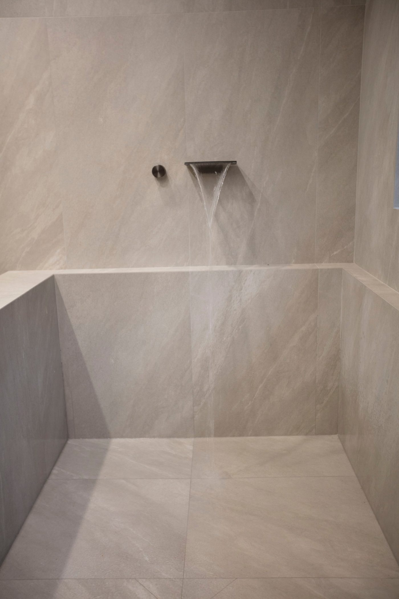
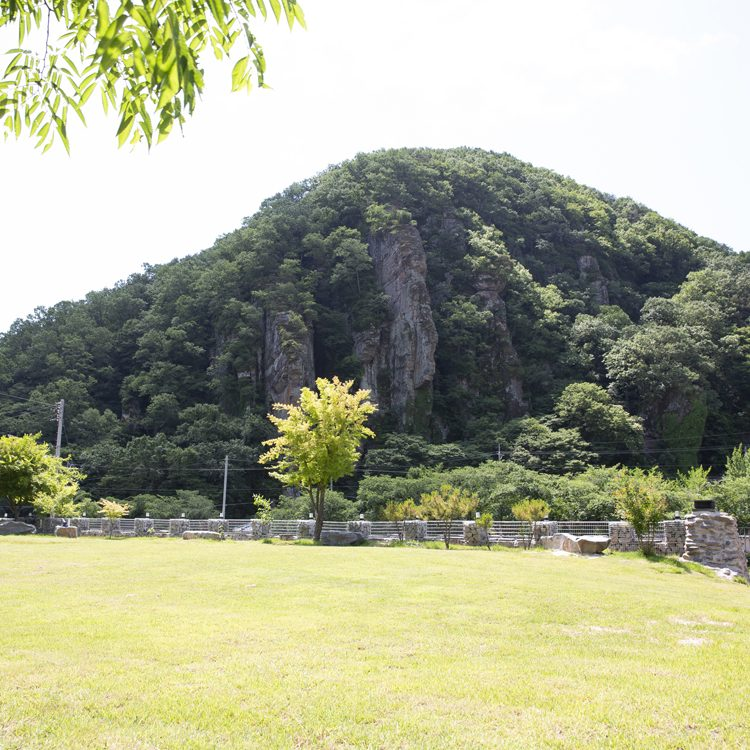
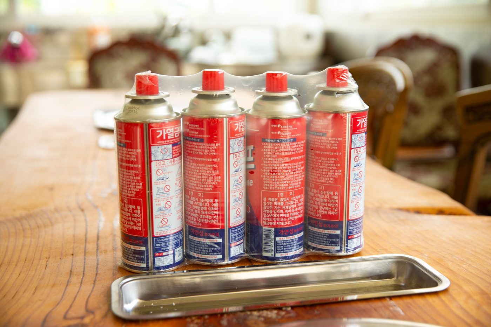

촬영장 옆에 독채 펜션이 있습니다. 멀리서 오시는 가족이 촬영 때문에 새벽에 출발하지 않도록 만든 공간입니다.
2층 거실은 폴딩도어를 열면 마당과 그대로 이어집니다. 소파와 러그, 낮은 테이블이 있어 촬영 전후로 가족이 앉아 쉬기 좋습니다. 아이들이 뛰어도 아래층에 소리가 덜 갑니다.
1층 세면장은 포세린 타일로 마감했고, 벽에서 물이 떨어지는 폭포형 수전과 조적 욕조를 두었습니다. 촬영 후에 씻고 나오면 그날의 피로가 다르게 남습니다.


마당에는 원목 테이블과 바베큐 시설이 있습니다. 저녁에 고기를 굽고, 다음 날 아침에 다시 촬영을 이어가는 일정이 가장 편안합니다.

촬영과 숙박을 함께 예약하시면 동선이 훨씬 편안해집니다.